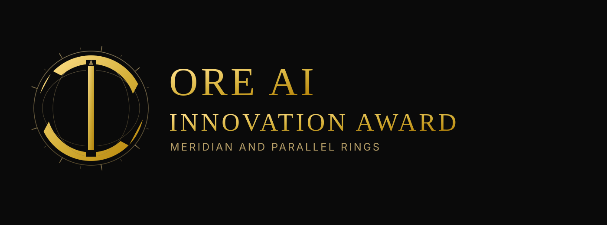
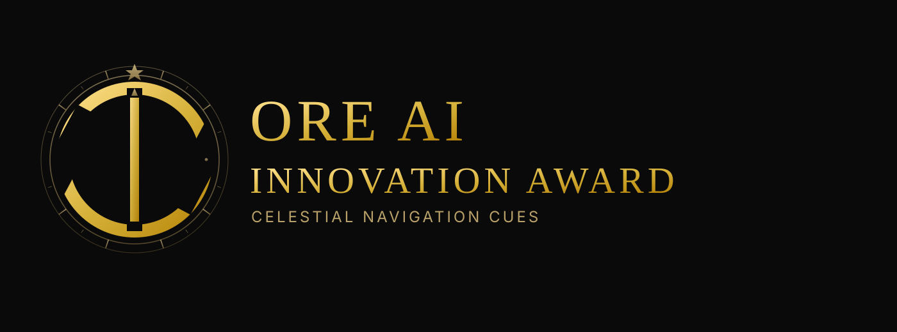
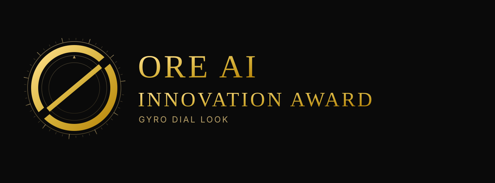
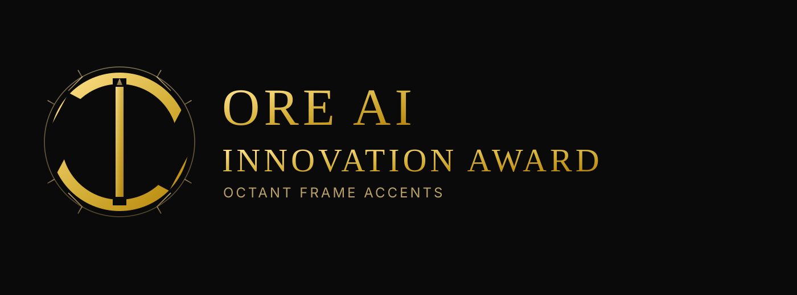
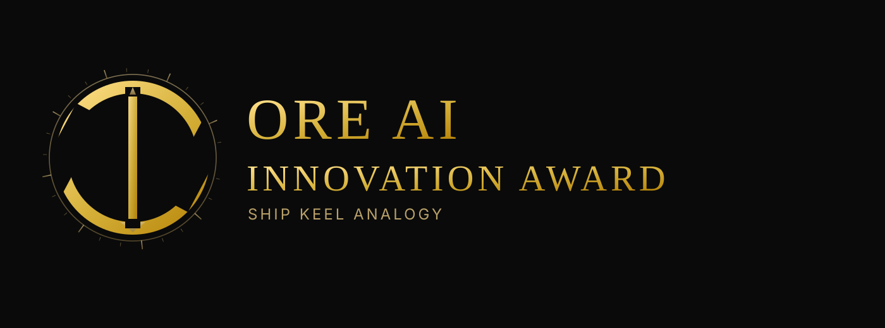
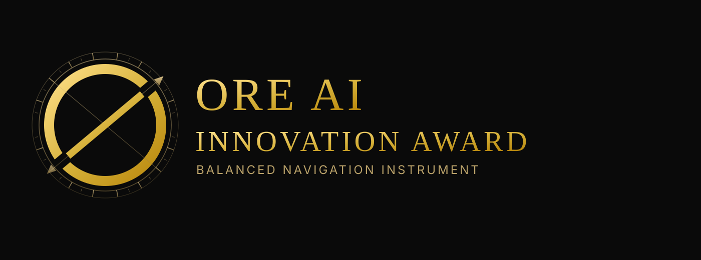

All variants keep the ORE-style dual ring openings and add navigation/measurement cues with different intensity levels.
01 - variant-01-subtle-compass
Subtle compass crosshair
02 - variant-02-north-pointer
North pointer emphasis
03 - variant-03-sextant-arcs
Sextant-style guide arcs
04 - variant-04-meridian-grid

Meridian and parallel rings
05 - variant-05-celestial

Celestial navigation cues
06 - variant-06-azimuth
Azimuth bearing spokes
07 - variant-07-surveyor
Surveyor triangulation
08 - variant-08-logbook-scale
Drafting ruler marks
09 - variant-09-gyro

Gyro dial look
10 - variant-10-octant

Octant frame accents
11 - variant-11-latitude
Latitude bands
12 - variant-12-bearing-labels
N E S W marks
13 - variant-13-keel-line

Ship keel analogy
14 - variant-14-binary-nav
Binary-navigation fusion
15 - variant-15-master-instrument

Balanced navigation instrument